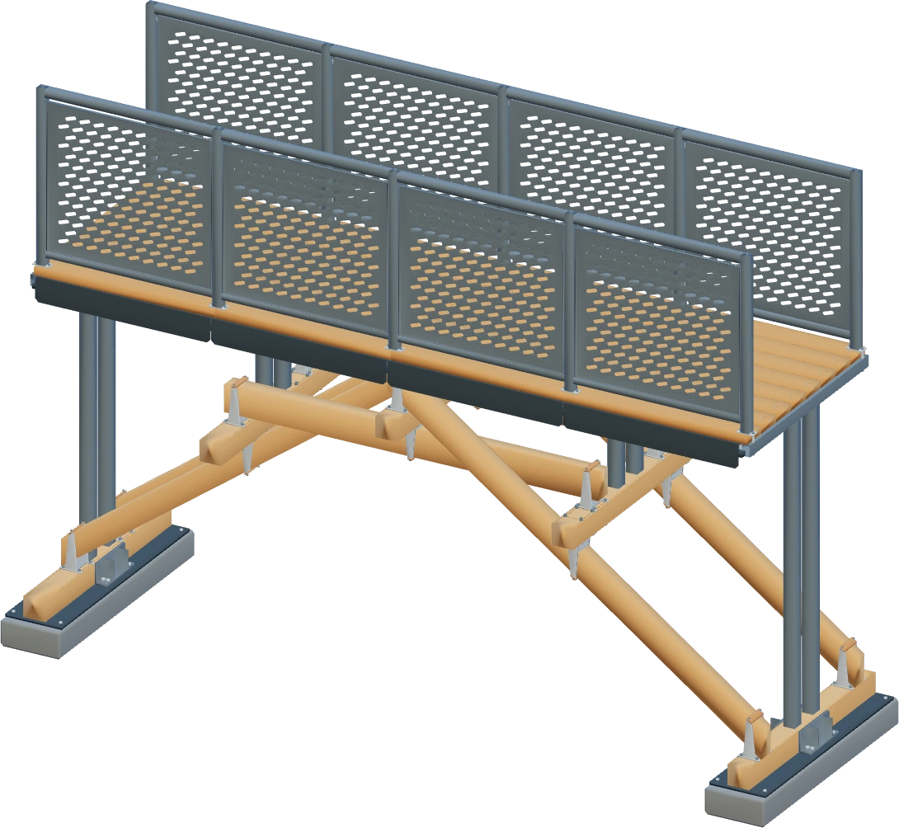
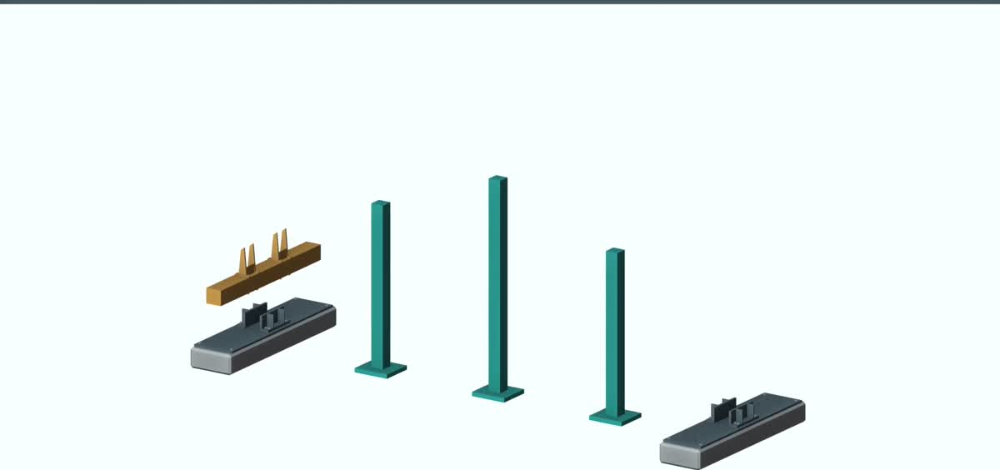
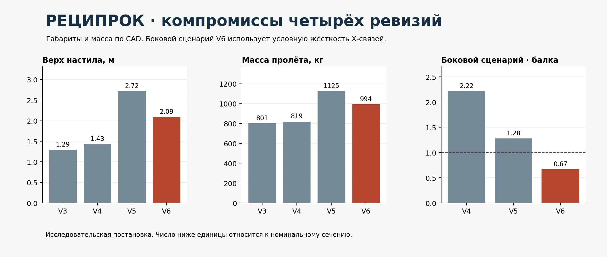

ВРЕМЯ ИНЖЕНЕРОВ · 2026
РЕЦИПРОК
Мост, в котором балки держат друг друга.
Исследовать модель ПрезентацияКонкурсная модель V6 Исходники на GitHub ↗
4,50 мпролёт между осями
1,20 мширина прохода
6 + 5балок и поперечин
КОНСТРУКЦИЯ
Разберите мост
Скройте верхние элементы, чтобы рассмотреть, как опираются деревянные балки и где проходят Х-связи.
Перетащите модель для вращения. Колесо мыши или жест двумя пальцами меняет масштаб.
ИДЕЯ ЛЕОНАРДО
Взаимное опирание
Концы продольной балки опираются на соседние поперечины. Середина той же балки поддерживает поперечину сверху.
Как замыкается контур
Название происходит от reciprocal — «взаимный». Посмотрите, как соседние элементы поддерживают друг друга.
Museo Leonardiano ↗


В ДВИЖЕНИИ
От балки к мосту
Три ролика показывают принцип, последовательность сборки и готовую модель с разных сторон.

Опоры и временная оснастка
Последовательность показана на цифровой модели.
Сборка 42 с
Облёт 12 с
РАЗВИТИЕ ПРОЕКТА
Четыре итерации
От деревянной схемы к компактной модели со стальными сёдлами, ограничителями и связями под настилом.


V6
КОНКУРС
Скачать PDF ↓